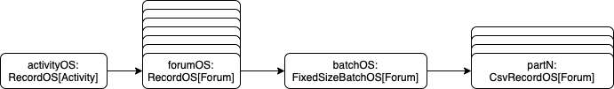

LDBC SNB provides a data generator, which produces synthetic datasets, mimicking a social network’s activity during a period of time. Datagen is defined by the charasteristics of realism, scalability, determinism and usability. More than two years have elapsed since my last technical update on LDBC SNB Datagen, in which I discussed the reasons for moving the code to Apache Spark from the MapReduce-based Apache Hadoop implementation and the challenges I faced during the migration. Since then, we reached several goals such as we refactored the serializers to use Spark’s high-level writers to support the popular Parquet data format and to enable running on spot nodes; brought back factor generation; implemented support for the novel BI benchmark; and optimized the runtime to generate SF30K on 20 i3.4xlarge machines on AWS.
Moving to SparkSQL
We planned to move parts of the code to SparkSQL, an optimized runtime framework for tabular data. We hypothesized that this would benefit us on multiple fronts: SparkSQL offers an efficient batch analytics runtime, with higher level abstractions that are simpler to understand and work with, and we could easily add support for serializing to Parquet based on SparkSQL’s capabilites.
Spark SQL is a Spark module for structured data processing. It provides a programming abstraction called DataFrames and can also act as a distributed SQL query engine. Spark SQL includes a cost-based optimizer, columnar storage, and code generation to make queries fast.
Dealing with the dataset generator proved quite tricky, because it samples from various hand-written distributions and dictionaries, and contains complex domain logic, for which SparkSQL unsuitable. We assessed that the best thing we could do is wrap entire entity generation procedures in UDFs (user defined SQL functions). However, several of these generators return entity trees1, which are spread across multiple tables by the serializer, and these would have needed to be split up. Further complicating matters, we would have also had to find a way to coordinate the inner random generators’ state between the UDFs to ensure deterministic execution. Weighing these and that we could not find much benefit in SparkSQL, we ultimately decided to leave entity generation as it is. We limited the SparkSQL refactor to the following areas:
- table manipulations related to shaping the output into the supported layouts and data types as set forth in the specification;
- deriving the Interactive and BI datasets;
- and generating the factor tables, which contain analytic information, such as population per country, number of friendships between city pairs, number of messages per day, etc., used by the substitution parameter generator to ensure predictable query runtimes.
We refer to points (1.) and (2.) collectively as dataset transformation, while (3.) as factor generation. Initially, these had been part of the generator, extracted as part of this refactor, which resulted in cleaner, more maintainable design.
The diagram above shows the components on a high level. The generator outputs a dataset called IR (intermediate representation), which is immediately written to disk. Then, the IR is input to the dataset transformation and factor generation stages, which respectively generate the final dataset and the factor tables. We are aware that spitting out the IR adds considerable runtime overhead and doubles the disk requirements in the worst-case scenario, however, we found that there’s no simple way to avoid
it, as the generator produces entity trees, which are incompatible with the flat, tabular, column oriented layout of SparkSQL. On the positive side, this design enables us to reuse the generator output for multiple transformations and add new factor tables without regenerating the data.
I’ll skip describing the social network graph dataset generator (i.e. stage 1) in any more detail, apart from its serializer, as that was the only part involved in the current refactor. If you are interested in more details, you may look up the previous blogpost in the series or the Interactive benchmark specification.
Transformation pipeline
The dataset transformation stage sets off where generation finished, and applies an array of pluggable transformations:
- explodes edges and / or attributes into separate tables,
- subsets the snapshot part and creates insert / delete batches for the BI workload,
- subsets the snapshot part for the Interactive workload,
- applies formatting related options such as date time representation,
- serializes the data to a Spark supported format (CSV, Parquet),
We utilize a flexible data pipeline that operates on the graph.
trait Transform[M1 <: Mode, M2 <: Mode] extends (Graph[M1] => Graph[M2]) {
type In = Graph[M1]
type Out = Graph[M2]
def transform(input: In): Out
override def apply(v: Graph[M1]): Graph[M2] = transform(v)
}
The Transform trait encodes a pure (side effect-free) function polymorphic over graphs, so that transformation pipelines can be expressed with ordinary function composition in a type safe manner. Let’s see some of the transformations we have.
case class RawToBiTransform(mode: BI, simulationStart: Long, simulationEnd: Long, keepImplicitDeletes: Boolean)
extends Transform[Mode.Raw.type, Mode.BI] {
override def transform(input: In): Out = ???
}
case class RawToInteractiveTransform(mode: Mode.Interactive, simulationStart: Long, simulationEnd: Long)
extends Transform[Mode.Raw.type, Mode.Interactive] {
override def transform(input: In): Out = ???
}
object ExplodeEdges extends Transform[Mode.Raw.type, Mode.Raw.type] {
override def transform(input: In): Out = ???
}
object ExplodeAttrs extends Transform[Mode.Raw.type, Mode.Raw.type] {
override def transform(input: In): Out = ???
}
Therefore, a transformation pipeline may look like this:
val transform = ExplodeAttrs
.andThen(ExplodeEdges)
.andThen(RawToInteractiveTransform(params, start, end))
val outputGraph = transform(inputGraph)
The Graph record has a definition field containing graph-global metadata, whereas entities holds the datasets keyed by their entity type. There are 3 graph modes currently: Raw, Interactive and BI. The BI dataset has different layout than the rest, as it contains incremental inserts and deletes for the entities additionally to the bulk snapshot. This is captured in the Layout dependent type, over which the entities are polymorphic.
It’s important to understand that Graph holds DataFrames, and these are lazily computed by Spark. So, Graph is merely a description of transformations used to derive the comprising datasets, which makes them subject to all the SparkSQL fanciness such as query optimization, whole stage code generation, and so on. Processing is delayed until an action (such as a disk write) forces it.
case class GraphDef[+M <: Mode](
isAttrExploded: Boolean,
isEdgesExploded: Boolean,
useTimestamp: Boolean,
mode: M,
entities: Map[EntityType, Option[String]]
)
case class Graph[+M <: Mode](
definition: GraphDef[M],
entities: Map[EntityType, M#Layout]
)
sealed trait Mode {
type Layout
/* ... */
}
object Mode {
final case object Raw extends Mode {
type Layout = DataFrame
/* ... */
}
final case class Interactive(bulkLoadPortion: Double) extends Mode {
type Layout = DataFrame
/* ... */
}
final case class BI(bulkloadPortion: Double, batchPeriod: String) extends Mode {
type Layout = BatchedEntity
/* ... */
}
}
You may notice that Transform is statically typed w.r.t. Mode, however other properties, like isAttrExploded, or isEdgesExploded are not captured in the type, and remain merely dynamic. This makes some nonsensical transformation pipelines (i.e. that explodes edges twice in a row) syntactically valid. This trade-off in compile-time safety was made to prevent overcomplicating the types.
As we already mentioned, Graph is essentially a persistent container of EntityType -> DataFrame mappings. EntityType can be Node, Edge and Attr, and is used to identify the entity and embellish with static metadata, such a descriptive name and primary key, whether it is static or dynamic (as per the specification), and in case of edges, the source and destination type and cardinality. This makes it very simple to create transformation rules on static entity properties with pattern matching.
Usually, a graph transformation involves matching entities based on their EntityType, and modifying the mapping (and if required, other metadata). Take, for example, the ExplodeAttrs transformation, which explodes into separate tables the values of two columns of Person stored as arrays:
object ExplodeAttrs extends Transform[Mode.Raw.type, Mode.Raw.type] {
override def transform(input: In): Out = {
if (input.definition.isAttrExploded) { // assert at runtime that the transformation hasn't been applied yet
throw new AssertionError("Attributes already exploded in the input graph")
}
def explodedAttr(attr: Attr, node: DataFrame, column: Column) =
attr -> node.select(withRawColumns(attr, $"id".as(s"${attr.parent}Id"), explode(split(column, ";")).as(s"${attr.attribute}Id")))
val modifiedEntities = input.entities
.collect { case (k @ Node("Person", false), df) => // match the Person node. This is the only one ExplodeAttrs should modify
Map(
explodedAttr(Attr("Email", k, "EmailAddress"), df, $"email"), // add a new "PersonEmailEmailAddress" entity derived by exploding the email column of Person
explodedAttr(Attr("Speaks", k, "Language"), df, $"language"), // add a new "PersonSpeaksLanguage" entity derived by exploding the language column of Person
k -> df.drop("email", "language") // drop the exploded columns from person
)
}
val updatedEntities = modifiedEntities
.foldLeft(input.entities)(_ ++ _) // merge-replace the modified entities in the graph
val updatedEntityDefinitions = modifiedEntities
.foldLeft(input.definition.entities) { (e, v) =>
e ++ v.map{ case (k, v) => k -> Some(v.schema.toDDL) } // update the entity definition schema to reflect the modifications
}
val l = lens[In] // lenses provide a terse syntax for modifying nested fields
(l.definition.isAttrExploded ~ l.definition.entities ~ l.entities).set(input)((true, updatedEntityDefinitions, updatedEntities))
}
Note that EntityType does not hold the dataset’s full SQL schema currently, as it’s not useful for pattern matching, but can be accessed directly from DataFrame if needed.
Input/output
The Reader and Writer typeclasses are used to read from a Source and write to a Sink respectively, terminating a graph transformation pipeline
on both ends.
trait Reader[T] {
type Ret
def read(self: T): Ret
def exists(self: T): Boolean
}
trait Writer[S] {
type Data
def write(self: Data, sink: S): Unit
}
There are implementations under ldbc.datagen.io.instances that read a graph from a GraphSource and write to a GraphSink.
import ldbc.snb.datagen.model
import ldbc.snb.datagen.model.Mode
import ldbc.snb.datagen.io.graphs.{GraphSource, GraphSink}
import ldbc.snb.datagen.io.instances._
// read
val inputPath = "path/to/input/graph"
val inputFormat = "parquet"
val source = GraphSource(model.graphs.Raw.graphDef, inputPath, inputFormat)
val graph = Reader[GraphSource, Graph[Mode.Raw.type]].read(source)
// transform
val transform = ExplodeAttrs.andThen(ExplodeEdges)
val transformedGraph = transform(graph)
// write
val outputPath = "path/to/output/graph"
val outputFormat = "csv"
val sink = GraphSink(outputPath, outputFormat)
Writer[GraphSink, Graph[Mode.Raw.type]].write(transformedGraph, sink)
We provide Ops syntax to make it shorter:
import ldbc.snb.datagen.model
import ldbc.snb.datagen.model.Mode
import ldbc.snb.datagen.io.graphs.{GraphSource, GraphSink}
import ldbc.snb.datagen.io.instances._
import ldbc.snb.datagen.io.Reader.ops._
import ldbc.snb.datagen.io.Writer.ops._
// read
val inputPath = "path/to/input/graph"
val inputFormat = "parquet"
val graph = GraphSource(model.graphs.Raw.graphDef, inputPath, inputFormat).read
// transform
val transformedGraph = ??? /* ... */
// write
val outputPath = "path/to/output/graph"
val outputFormat = "csv"
transformedGraph.write(GraphSink(outputPath, outputFormat))
The reader/writer architecture is layered, the graph reader/writer uses dataframe readers/writers for each of its entities. One interesting aspect of implementing the reader was dealing with the input schema. Parquet is self-describing, however as we also support the CSV format, we had to provide a way for correct schema detection and column parsing.
Spark has a facility to derive SparkSQL schema from case classes automatically2. We created case classes for each entity in the Raw dataset. We also created a typeclass EntityTraits associating these classes with their EntityType, so we can summon them (and consequently their SparkSQL schema) in the reader.
The case classes are used during the serialization of the generated dataset too, but more about that later.
Factor generation
As we already mentioned, factor generation was originally part of the data generator, i.e. factor tables were calculated on the fly and emitted as side outputs. This design had some problems. Auxiliary data structures had to be maintained and interleaved with generation, which violated separation of concerns, consequently hurting readability and maintainability. Also, anything more complicated than entity local aggregates where impossible to express in the original MapReduce framework. To keep the preceding Spark rewrite at a managable scope, the original factor generation code had been removed.
We decided it’s best to reintroduce factor generation as a post-processing step that operates on the generated data. This makes it possible to express more complex analytical queries, requires no prior knowledge about the generator, can be done in SparkSQL (making it much simpler), and removes the impact on the generator’s performance, so that we can optimize them separately. Since this refactor, we almost tripled the number factor tables (up to 31 to cover both SNB workloads, BI and Interactive). The queries computing of certain factor tables even use GraphX, which was unimaginable with the previous design.
Factor tables are added by extending a map with a name -> Factor pair. Factor declares is input entities, and accepts a function that receives input DataFrames, and returns a single DataFrame as output.
val factors = Map (
"personDisjointEmployerPairs" -> Factor(PersonType, PersonKnowsPersonType, OrganisationType, PersonWorkAtCompanyType) {
case Seq(person, personKnowsPerson, organisation, workAt) =>
val knows = undirectedKnows(personKnowsPerson)
val company = organisation.where($"Type" === "Company").cache()
val personSample = person
.orderBy($"id")
.limit(20)
personSample
.as("Person2")
.join(knows.as("knows"), $"knows.person2Id" === $"Person2.id")
.join(workAt.as("workAt"), $"workAt.PersonId" === $"knows.Person1id")
.join(company.as("Company"), $"Company.id" === $"workAt.CompanyId")
.select(
$"Person2.id".alias("person2id"),
$"Company.name".alias("companyName"),
$"Company.id".alias("companyId"),
$"Person2.creationDate".alias("person2creationDate"),
$"Person2.deletionDate".alias("person2deletionDate")
)
.distinct()
},
/* more factors */
)
As you can see, it’s not much complicated than using plain SQL, with the added benefit of being able to extract recurring subqueries to functions (e.g. undirectedKnows). Currently, there’s no parallelization between different factor tables (although each of them is parallelized internally by Spark). The Factor table writer uses the same componentized architecture as the graph writer, i.e. it uses the dataframe writer under the hood.
Revamping the data generator’s serializer
At this point, both the transformation pipeline and factor generator was ready, however the data generator was still chugging with the old serializer, emitting the IR in CSV. We wanted to move this to Parquet to improve performance and reduce its size, but there was a problem: due to the generator’s custom data representation, SparkSQL (and its DataSource API) was off-limits. So we’ve bitten the bullet, and rewritten the existing serializer to emit Parquet.
Parquet is an open source data format that evolved to be the de facto standard for Big Data batch pipelines. It offers a column-oriented, compressed, schemaful representation that is space-efficient and suited for analytic queries. The file format leverages a record shredding and assembly model, which originated at Google. This results in a file that is optimized for query performance and minimizing I/O.
The new serialization framework is heavily influenced by the design of Java OutputStreams, in the sense that stateful objects are composed to form a pipeline. For example, in case of activities, the input is an activity tree, and the output is a set of rows in multiple files (eg. forum, forumHasTag, post, postHasTag, etc.). The components that take part in activity serialization are shown on the diagram below. The activity tree is iterated (1st component) and the corresponding entity serializer is called (2nd component), which is fed into a component that splits the records (3rd one) among several output streams writing individual files (last).

The benefit of this architecture is that only the last component needs to change when we add support for a new output format.
To support Parquet, we made use of row-level serializers available in Hadoop’s Parquet library (bundled with SparkSQL), and internal classes in SparkSQL to derive Parquet schema for our entities. Remember how we used case classes for the Raw entities to derive the input schema in the graph reader during dataset transformation? Here we use the same classes (e.g. Forum) and Spark’s Encoder framework to encode the entities in Parquet, which means that the generated output remains consistent with DataFrame-based reader, and we spare a lot of code duplication.
Optimizations
After these refactors, we were able to generate the BI dataset with scale factor 10K on 300 i3.4xlarge machines in one hour. Decreasing the number of machines resulted in out of memory errors in the generator. We realized partition sizes (and thus the number of partitions) should be determined based on available memory. Our experiments showed that a machine with 128GB of memory is capable of generating SF3K (scale factor 3000) reliably with 3 blocks3 per partition given ample disk size to allow for spills (tested with 3.8TB); while less partitions (subsequently, larger block/partition ratio) would introduce OOM errors. Furthermore, we split the data generator output after a certain number of rows written, to fend against the skew between different kinds of entities possibly causing problems during transformation4. These optimizations enabled us to run SF10K reliably on 4 i3.4xlarge machines in 11 hours (which is still more than 6x reduction in cost). We weren’t able to run SF30K run on 10 machines (1 machine / SF3K), even 15 ran out of disk. This non-linear disk use should be investigated further as it complicates calculating cluster sizes for larger scale factors.
./tools/emr/submit_datagen_job.py sf3k_bi 3000 parquet bi \
--sf-per-executor 3000 \
--partitions 330 \
--jar $JAR_NAME \
--instance-type i3.4xlarge \
--bucket $BUCKET_NAME \
-- --explode-edges --explode-attrs
./tools/emr/submit_datagen_job.py sf10k_bi 10000 parquet bi \
--sf-per-executor 3000 \
--partitions 1000 \
--jar $JAR_NAME \
--instance-type i3.4xlarge \
--bucket $BUCKET_NAME \
-- --explode-edges --explode-attrs
The above examples working configurations for generating the 3K and 10K BI datasets. The --sf-per-executor option controls the number of worker nodes allocated, in this case 1 node per every 3000 SF, i.e. 1 and 4 nodes correspondingly. The --partitions option controls the total number of partitions, and was calculated based on the number of persons using the formula partitions = ceil(number_of_persons / block_size / 3) to get a maximum of 3 blocks per partition.
Conclusion
These improvements made LDBC SNB datagen more modular, maintainable and efficient, costing under a cent per scale factor to generate the BI dataset, which enables us to generate datasets beyond SF 100K.
Footnotes
-
The generator produces hierarchies, such as forum wall with a random number of posts, that have comments, etc. This tree is iterated, and different entities are written to separate files. ↩︎
-
Shameless plug: You can learn more on this from another blogpost of mine. ↩︎
-
The datagenerator produces blocks of 10,000 persons and their related entities. Entities from different blocks are unrelated (isolated). ↩︎
-
The maximum row count per file is currently 10M, however, this can be modified with a command line option. We also had an alternative design in mind where this number would have been determined based on the average row size of each entity, however, we stayed with the first version for simplicity. ↩︎